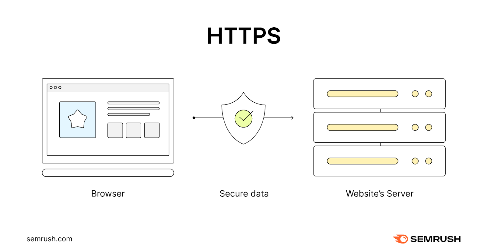

У цифрову епоху, коли інтернет став невід'ємною частиною нашого повсякденного життя, питання безпеки в мережі стає надзвичайно актуальним. Особиста безпека в інтернеті стає важливим питанням для кожного користувача. Інтернет є простором, де ми ділимося своїми думками, знайомимося з новими людьми, здійснюємо покупки та виконуємо безліч інших дій. Проте цей простір також повний загроз, які можуть поставити під загрозу нашу особисту інформацію, фінансову безпеку та навіть саму особистість.
81% вторгнень хакерів пов'язані зі слабкими або вкраденими паролями користувачів. Критичні сервіси мають бути найзахищенішими (пошта, банківські додатки, держ. послуги, соцмережі). Злом пошти - дає змогу відновити всі паролі до прив'язаних акаунтів. Злом банківських додатків - позбавляє вас коштів на рахунках. Злом держ. послуг - уможливлює встановити електронний підпис і відкриває доступ до повного переліку державних послуг, наприклад, переоформлення нерухомості. (Перевіряйте періодично його відсутність в особистому кабінеті). Злом соцмереж - дає змогу маніпулювати близькими, заражати вірусами через пости і повідомлення, викрасти всі файли з листувань тощо. Бази даних крадуть, їх методично розшифровують і масово перебирають усі акаунти на популярних сайтах. Потрібен складний пароль! Ненадійні паролі роблять марною будь-яку систему безпеки. У сучасному світі не потрібно запам'ятовувати всі паролі - тільки один! Для критичних сервісів користуйтеся спец. програмою «Менеджер паролів». Потрібно запам'ятати лише один пароль від входу (інші генеруються автоматично і зберігаються в програмі), але цей пароль має бути максимально надійним. Якщо забудете його, то просто відновите всі паролі вже на самих сервісах.
Небезпечним може бути абсолютно будь-який сайт. Покиньте сайт при появі перших підозр у підробці. На сайті багато «візуального шуму», щоб збити вас з пантелику, менше думати і швидше клікнути на посилання (спливаюча реклама, пропозиція оновити браузер, виграш у лотерею, звуки). Якщо вас закликають відправити SMS, ввівши свій номер на сайті, - це підписка на платні послуги, або ваш номер внесуть у базу реклами (з перепродажем усім-всім) Переадресація на інший сайт. Зовнішні дефекти сайту (помилки, старі новини, не працюють кнопки, посилання, порожній підвал без технічної інформації). Перед введенням своїх даних на будь-якому сайті - обов'язково перевіряйте його на достовірність (https://, зовнішній вигляд, сама адреса, пробивши на фішинг). Вікно авторизації - перевіряйте на справжність навіть під час роботи на надійних сайтах (воно може бути спливаючим від шахраїв, наприклад, через зламаний ними Wi-Fi). Не варто бездумно ходити різними сайтами (веб-серфінг).
